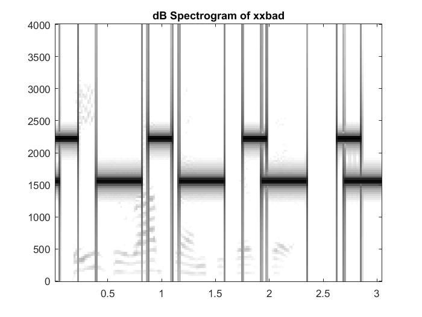
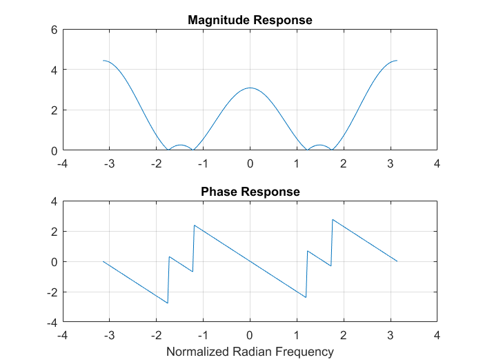
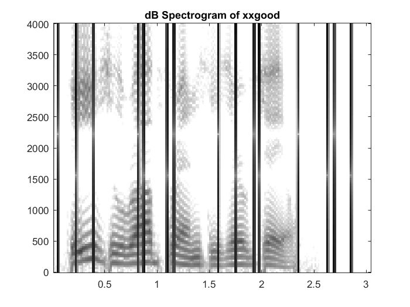

Design an FIR nulling filter to remove interfering sinusoid
Contents
Part 4a (Play and graph)
load('speechbad.mat');
sound(xxbad, fs);
figure;
plotspecDB(xxbad, fs, 256, 80);
title('dB Spectrogram of xxbad');

Part 4b (Cascade)
wn2222 = (2222.*2.*pi)./fs;
n2222 = [1, -2.*cos(wn2222), 1];
wn1555 = (1555.*2.*pi)./fs;
n1555 = [1, -2.*cos(wn1555), 1];
null = conv(n2222, n1555);
disp('Nulling filter coefficients:');
disp(null);
Nulling filter coefficients:
1.0000 -0.3379 1.7624 -0.3379 1.0000
Part 4c
figure;
ww = -pi:(pi/100):pi;
H = freqz(null, 1, ww);
subplot(2,1,1);
plot(ww, abs(H)), grid on;
title('Magnitude Response');
subplot(2,1,2);
plot(ww, angle(H)), grid on;
xlabel('Normalized Radian Frequency');
title('Phase Response');

Part 4d
xxgood = conv(xxbad, null);
sound(xxgood, fs);
figure;
plotspecDB(xxgood, fs, 256, 80);
title('dB Spectrogram of xxgood');
